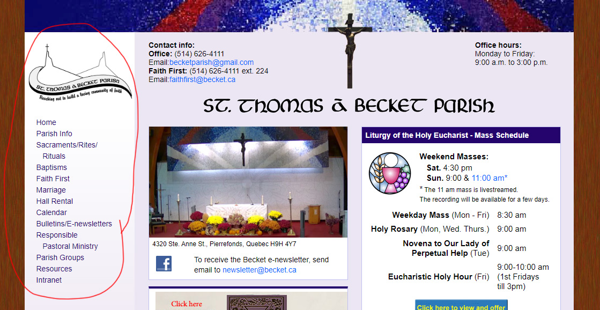

St. Thomas A Becket Parish is a catholic church that has been around since 19xx and is located in the West Island. It may seem like a place of worship at first, but it also provides a reception hall for various events. People of different backgrounds and ages frequent the church, which creates its diverse community.
*check out the og site here*
*check out the wip site here*
The clients are eager to modernize the website due to how outdated it is. As long as it can be responsive to any device, intuitive and esasy to use, the better.
The act of overhauling the old website whilst retaining its contents was quite challenging to be honest.
As seen above, the old website was quite cluttered, with its "nav" positioned at the left hand side along with the links leading to various pages.
Thus I decided to place everything into one page and centered where it will be easier for users to navigate and go to where they want to go.
As you can see, I had to deal with a spider web of information and content to create the new website. Links to different pages are placed within images rather than simply words in order to make navigation visually easier for users.
Laziness, Procrastination, etc.. is a main reason of why I had a difficult time to get the website done. As well as mentally beating myself up, thinking that I am incapable, and shouldn't even try coding since I'll for sure suck at it.
After all that negative self talk, (and only 3 weeks to produce an adequate result of a website), I pushed myself to code everyday, and I started to gain knowledge of it little by little. I'm glad that I also gained confidence in myself, that I CAN understand and learn coding. Not limiting myself into saying that I don't have the capabilities to do so.